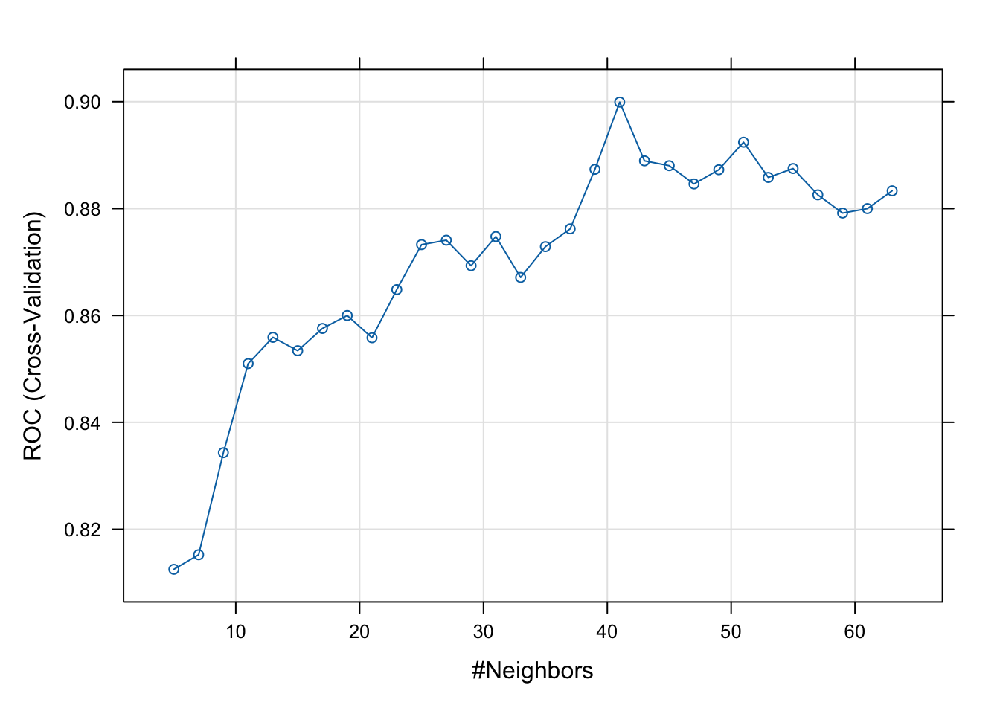
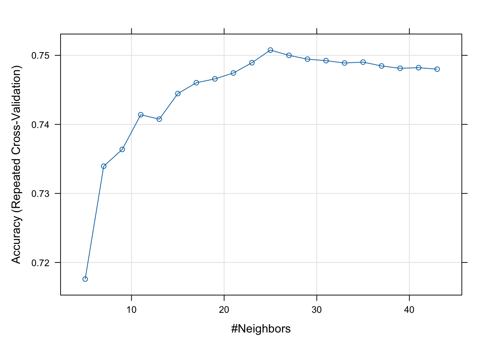

2 Cross-validation
2.1 Introduction
When assessing the performance of a model in the same data that was used to fit the model, we will be overestimating the model performance. A better strategy is to initially split the data and use one part to fit the model and the other one to test it. In machine learning terminology the data used to fit the model is called the training data and the data used to assess the model performance is called testing data.
The cross-validation is a repetition of the process above but each time we use a different split of the data. This will result in several measures of performance obtained in each split combination. The final performance statistics is obtained by averaging all results of the different splits.
2.2 Readings
Read the following chapter of An introduction to statistical learning:
- 5.1 Cross-validation
2.3 Practice session
Task 1 - Cross-validated MSE and R2
We will be using the bmd.csv dataset to fit a linear model for bmd using age, sex and bmi, and compute the cross-validated MSE and \(R^2\). We will fit the model with main effects using 10 times a 5-fold cross-validation.
We will use the tools from the caret package. This is a powerful package that wraps several methods for regression and classification: manual
library(e1071)
library(caret) #library for Machine Learning
library(boot) #library for bootstrap
library(pROC) #library for the ROC curve
library(Rmisc) #CI() function to compute the conf interval for the mean
set.seed(1974)
#the option stringsAsFactors = TRUE in the command below converts
#string variables as sex into factor variables
bmd.data <- read.csv("https://www.dropbox.com/s/c6mhgatkotuze8o/bmd.csv?dl=1",
stringsAsFactors = TRUE)
#computes the BMI
bmd.data$bmi <- bmd.data$weight_kg / (bmd.data$height_cm/100)^2trC.lm <- trainControl( #defines the CV procedure
method = "repeatedcv", #multiple CV
number = 5, #5-fold CV
repeats = 10) #repeats the cross validation 10 times
#fits the linear model with CV defined above
model.lm <- train(bmd ~ age + sex + bmi,
data = bmd.data,
method = "lm",
trControl = trC.lm)
model.lm## Linear Regression
##
## 169 samples
## 3 predictor
##
## No pre-processing
## Resampling: Cross-Validated (5 fold, repeated 10 times)
## Summary of sample sizes: 136, 135, 134, 135, 136, 136, ...
## Resampling results:
##
## RMSE Rsquared MAE
## 0.137992 0.331976 0.1044175
##
## Tuning parameter 'intercept' was held constant at a value of TRUE##
## Call:
## lm(formula = .outcome ~ ., data = dat)
##
## Residuals:
## Min 1Q Median 3Q Max
## -0.38207 -0.07669 -0.00654 0.07888 0.51256
##
## Coefficients:
## Estimate Std. Error t value Pr(>|t|)
## (Intercept) 0.6063945 0.0834051 7.270 1.36e-11 ***
## age -0.0041579 0.0008625 -4.821 3.23e-06 ***
## sexM 0.0949602 0.0213314 4.452 1.56e-05 ***
## bmi 0.0155913 0.0024239 6.432 1.30e-09 ***
## ---
## Signif. codes: 0 '***' 0.001 '**' 0.01 '*' 0.05 '.' 0.1 ' ' 1
##
## Residual standard error: 0.138 on 165 degrees of freedom
## Multiple R-squared: 0.3254, Adjusted R-squared: 0.3131
## F-statistic: 26.53 on 3 and 165 DF, p-value: 4.677e-14TRY IT YOURSELF:
- Refit the same model and evaluate the MSE and \(R^2\) using leave one out (method = “LOOCV”)
See the solution code
- Fit a k nearest neighbour regression for BMD using AGE, SEX and BMI, and choose the k (number of neighbours) by 10-fold cross-validation repeated 10 times. Also, obtain the MSE and \(R^2\).
NOTE1: you need the make sure all the predictors are in the same scale. You can
either use the ’scale() function or add preProcess = c("center","scale") to
the train() function.
NOTE2: you can either use tuneLength = 20 to define the number of neighbours
or tuneGrid=expand.grid(k=seq(1,43,2))
See the solution code
trC.knn <- trainControl(
method = "repeatedcv", # multiple CV
number = 10, #10-fold CV
repeats = 10)
model.knn <- train(bmd ~ age + sex + bmi,
data = bmd.data, method = "knn",
trControl = trC.knn,
preProcess = c("center","scale"),
tuneLength = 20) #instead of tuneLength, we could have
#used tuneGrid=expand.grid(k=1:40)
# Model Summary
model.knn
model.knn$results
#results in each cv-fold
model.knn$resample
plot(model.knn)
Task 2 - ROC cross-validation
We want to fit the following model logit(fracture) ~ age + sex + bmi +bmd and assess its performance by computing the area under the ROC curve using cross-validation
#caret does not like the category "no fracture"
#because of the space
#We are creating a new label for the categories
bmd.data$fract <- ifelse (bmd.data$fracture =="fracture", "F", "NF")
bmd.data$fract <- as.factor(bmd.data$fract)
trC <- trainControl(
method = "cv", #just 1 CV
number = 10, #10-fold CV
classProbs = TRUE,
summaryFunction = twoClassSummary,
savePred =TRUE) #to be used in the confusion matrix
model.LR <- train(fract ~ age + sex + bmi + bmd ,
data = bmd.data, method = "glm",
family="binomial",
trControl = trC,
metric = "ROC")
# Model Summary
model.LR## Generalized Linear Model
##
## 169 samples
## 4 predictor
## 2 classes: 'F', 'NF'
##
## No pre-processing
## Resampling: Cross-Validated (10 fold)
## Summary of sample sizes: 152, 152, 152, 152, 152, 152, ...
## Resampling results:
##
## ROC Sens Spec
## 0.8980303 0.72 0.9166667## parameter ROC Sens Spec ROCSD SensSD SpecSD
## 1 none 0.8980303 0.72 0.9166667 0.1362458 0.1686548 0.09622504## ROC Sens Spec Resample
## 1 0.9500000 0.6 1.0000000 Fold01
## 2 0.7500000 0.6 0.9166667 Fold02
## 3 0.9666667 0.6 0.9166667 Fold03
## 4 0.9000000 0.8 1.0000000 Fold04
## 5 0.5666667 0.6 0.6666667 Fold05
## 6 0.9666667 1.0 0.9166667 Fold06
## 7 0.9636364 0.6 1.0000000 Fold07
## 8 0.9833333 0.8 0.9166667 Fold08
## 9 0.9333333 0.6 0.9166667 Fold09
## 10 1.0000000 1.0 0.9166667 Fold10## Cross-Validated (10 fold) Confusion Matrix
##
## (entries are percentual average cell counts across resamples)
##
## Reference
## Prediction F NF
## F 21.3 5.9
## NF 8.3 64.5
##
## Accuracy (average) : 0.858#Confusion matrix for the final model
pred.LR <- predict(model.LR)
confusionMatrix(data=pred.LR, reference=bmd.data$fract)## Confusion Matrix and Statistics
##
## Reference
## Prediction F NF
## F 35 9
## NF 15 110
##
## Accuracy : 0.858
## 95% CI : (0.7961, 0.9068)
## No Information Rate : 0.7041
## P-Value [Acc > NIR] : 2.272e-06
##
## Kappa : 0.6469
##
## Mcnemar's Test P-Value : 0.3074
##
## Sensitivity : 0.7000
## Specificity : 0.9244
## Pos Pred Value : 0.7955
## Neg Pred Value : 0.8800
## Prevalence : 0.2959
## Detection Rate : 0.2071
## Detection Prevalence : 0.2604
## Balanced Accuracy : 0.8122
##
## 'Positive' Class : F
## TRY IT YOURSELF
- Use the KNN algorithm to predict fracture based on the same variables of the logistic model above, by choosing the k using cross-validation and compute the area under the ROC.
See the solution code
trC.knn <- trainControl(
method = "cv", #just 1 CV
number = 10, #10-fold CV
classProbs = TRUE,
summaryFunction = twoClassSummary,
savePred =TRUE) #to be used in the confusion matrix
model.knn <- train(fract ~ age + sex + bmi + bmd ,
data = bmd.data, method = "knn",
trControl = trC.knn,
tuneLength = 30,
preProcess = c("center","scale"),
metric = "ROC")
# Model Summary
model.knn
plot(model.knn)
Task 3 - Classification
Read the dataset SBI.csv and create a prediction model for the outcome “sbi” using “age”, “pct”, “crp”, “wcc” and “fever_hours” as predictors (you can read.
Let’s first read the data in
sbi.data <-
read.csv("https://www.dropbox.com/s/wg32uj43fsy9yvd/SBI.csv?dl=1",
stringsAsFactors = TRUE)
summary(sbi.data)## X id fever_hours age sex
## Min. : 1.0 Min. : 495 Min. : 0.00 Min. :0.010 F:1013
## 1st Qu.: 587.8 1st Qu.:133039 1st Qu.: 24.00 1st Qu.:0.760 M:1335
## Median :1174.5 Median :160016 Median : 48.00 Median :1.525
## Mean :1174.5 Mean :153698 Mean : 80.06 Mean :1.836
## 3rd Qu.:1761.2 3rd Qu.:196030 3rd Qu.: 78.00 3rd Qu.:2.752
## Max. :2348.0 Max. :229986 Max. :3360.00 Max. :4.990
## wcc prevAB sbi pct
## Min. : 0.2368 No :1370 Bact : 34 Min. : 0.00865
## 1st Qu.: 7.9000 Yes: 978 NotApplicable:1752 1st Qu.: 0.16000
## Median :11.6000 Pneu : 251 Median : 0.76000
## Mean :12.6431 UTI : 311 Mean : 3.74354
## 3rd Qu.:16.1000 3rd Qu.: 4.61995
## Max. :58.7000 Max. :156.47000
## crp
## Min. : 0.00
## 1st Qu.: 11.83
## Median : 30.97
## Mean : 48.41
## 3rd Qu.: 66.20
## Max. :429.90We will try different approaches starting with linear discriminant analysis
trCtrl.lda <- trainControl(method = "repeatedcv",
number = 10, #10-fold CV
repeats = 10,
classProbs = TRUE,
savePredictions = TRUE)
model.lda <- train(sbi ~ crp+pct+age+wcc+fever_hours,
data=sbi.data,
method="lda",
trControl = trCtrl.lda,
metric="Accuracy" )
model.lda$results## parameter Accuracy Kappa AccuracySD KappaSD
## 1 none 0.7478769 0.09311667 0.01071987 0.04376718## Confusion Matrix and Statistics
##
## Reference
## Prediction Bact NotApplicable Pneu UTI
## Bact 5 5 7 6
## NotApplicable 28 1722 238 273
## Pneu 0 3 2 1
## UTI 1 22 4 31
##
## Overall Statistics
##
## Accuracy : 0.7496
## 95% CI : (0.7315, 0.767)
## No Information Rate : 0.7462
## P-Value [Acc > NIR] : 0.3623
##
## Kappa : 0.0985
##
## Mcnemar's Test P-Value : <2e-16
##
## Statistics by Class:
##
## Class: Bact Class: NotApplicable Class: Pneu Class: UTI
## Sensitivity 0.147059 0.98288 0.0079681 0.09968
## Specificity 0.992221 0.09564 0.9980925 0.98675
## Pos Pred Value 0.217391 0.76161 0.3333333 0.53448
## Neg Pred Value 0.987527 0.65517 0.8936806 0.87773
## Prevalence 0.014480 0.74617 0.1068995 0.13245
## Detection Rate 0.002129 0.73339 0.0008518 0.01320
## Detection Prevalence 0.009796 0.96295 0.0025554 0.02470
## Balanced Accuracy 0.569640 0.53926 0.5030303 0.54321Now, let’s try the logistic regression
trCtrl.lr <- trainControl(method = "repeatedcv",
number = 10, #10-fold CV
repeats = 10,
classProbs = TRUE,
savePredictions = TRUE)
model.lr <- train(sbi ~ crp+pct+age+wcc+fever_hours,
data=sbi.data,
method="multinom",
trControl = trCtrl.lr,
tuneLength=1)## decay Accuracy Kappa AccuracySD KappaSD
## 1 0 0.7516195 0.09927548 0.008932933 0.04049479## Confusion Matrix and Statistics
##
## Reference
## Prediction Bact NotApplicable Pneu UTI
## Bact 0 1 1 0
## NotApplicable 27 1727 241 270
## Pneu 1 2 2 4
## UTI 6 22 7 37
##
## Overall Statistics
##
## Accuracy : 0.7521
## 95% CI : (0.7341, 0.7695)
## No Information Rate : 0.7462
## P-Value [Acc > NIR] : 0.2618
##
## Kappa : 0.101
##
## Mcnemar's Test P-Value : <2e-16
##
## Statistics by Class:
##
## Class: Bact Class: NotApplicable Class: Pneu Class: UTI
## Sensitivity 0.0000000 0.98573 0.0079681 0.11897
## Specificity 0.9991357 0.09732 0.9966619 0.98282
## Pos Pred Value 0.0000000 0.76247 0.2222222 0.51389
## Neg Pred Value 0.9855072 0.69880 0.8935442 0.87961
## Prevalence 0.0144804 0.74617 0.1068995 0.13245
## Detection Rate 0.0000000 0.73552 0.0008518 0.01576
## Detection Prevalence 0.0008518 0.96465 0.0038330 0.03066
## Balanced Accuracy 0.4995678 0.54152 0.5023150 0.55089And finally, knn.
trCtrl.knn <- trainControl(method = "repeatedcv",
number = 10, #10-fold CV
repeats = 10,
classProbs = TRUE,
savePredictions = TRUE)
model.knn <- train(sbi ~ crp+pct+age+wcc+fever_hours,
data=sbi.data,
method="knn",
trControl = trCtrl.knn,
preProcess = c("center","scale"),
tuneLength=20)
plot(model.knn)
## k-Nearest Neighbors
##
## 2348 samples
## 5 predictor
## 4 classes: 'Bact', 'NotApplicable', 'Pneu', 'UTI'
##
## Pre-processing: centered (5), scaled (5)
## Resampling: Cross-Validated (10 fold, repeated 10 times)
## Summary of sample sizes: 2114, 2114, 2113, 2114, 2113, 2112, ...
## Resampling results across tuning parameters:
##
## k Accuracy Kappa
## 5 0.7175953 0.12171412
## 7 0.7339458 0.12278852
## 9 0.7363738 0.10479303
## 11 0.7413980 0.10979312
## 13 0.7407610 0.09426706
## 15 0.7444609 0.09148660
## 17 0.7460360 0.08657437
## 19 0.7465912 0.08561247
## 21 0.7474448 0.08364397
## 23 0.7489325 0.08502779
## 25 0.7507663 0.08610948
## 27 0.7500005 0.07935699
## 29 0.7494477 0.07417419
## 31 0.7492342 0.07113888
## 33 0.7488938 0.06312317
## 35 0.7490229 0.05901425
## 37 0.7484635 0.05259630
## 39 0.7481255 0.04619287
## 41 0.7482135 0.04377731
## 43 0.7480011 0.04061429
##
## Accuracy was used to select the optimal model using the largest value.
## The final value used for the model was k = 25.## Confusion Matrix and Statistics
##
## Reference
## Prediction Bact NotApplicable Pneu UTI
## Bact 0 1 0 0
## NotApplicable 29 1727 244 264
## Pneu 0 1 2 1
## UTI 5 23 5 46
##
## Overall Statistics
##
## Accuracy : 0.756
## 95% CI : (0.7381, 0.7732)
## No Information Rate : 0.7462
## P-Value [Acc > NIR] : 0.1429
##
## Kappa : 0.1154
##
## Mcnemar's Test P-Value : NA
##
## Statistics by Class:
##
## Class: Bact Class: NotApplicable Class: Pneu Class: UTI
## Sensitivity 0.0000000 0.98573 0.0079681 0.14791
## Specificity 0.9995678 0.09899 0.9990463 0.98380
## Pos Pred Value 0.0000000 0.76281 0.5000000 0.58228
## Neg Pred Value 0.9855134 0.70238 0.8937713 0.88321
## Prevalence 0.0144804 0.74617 0.1068995 0.13245
## Detection Rate 0.0000000 0.73552 0.0008518 0.01959
## Detection Prevalence 0.0004259 0.96422 0.0017036 0.03365
## Balanced Accuracy 0.4997839 0.54236 0.5035072 0.565852.4 Exercises
- What are the advantages and disadvantages of k-fold cross- validation relative to the validation set approach? And LOOCV?
See the solution
The validation set approach is conceptually simple and easily implemented as you are simply partitioning the existing training data into two sets. However, there are two drawbacks: (1.) the estimate of the test error rate can be highly variable depending on which observations are included in the training and validation sets. (2.) the validation set error rate may tend to overestimate the test error rate for the model fit on the entire data set.
LOOCV is a special case of k-fold cross-validation with k = n. Thus, LOOCV is the most computationally intense method since the model must be fit n times. Also, LOOCV has higher variance, but lower bias, than k-fold CV.
- Load the dataset PimaIndiansDiabetes in the package mlbench (you might need
to install this package). This dataset consists of 768 observations
of 9 variables: 8 variables which will be used as model
predictors (number of times pregnant, plasma glucose concentration, diastolic blood pressure (mm Hg), triceps skin fold thickness (in mm), 2-hr serum insulin measure, body mass index, a diabetes pedigree function, and age) and 1 outcome variable (whether or not the patient has diabetes).
Use the KNN algorithm to predict diabetes using all the predictors available. Choose the number of neighbours using cross-validation
See the solution code
#install.packages("mlbench")
library(mlbench)
library(caret)
library(class)
set.seed(1999)
data(PimaIndiansDiabetes)
trCtrl.knn.diab <- trainControl(method = "repeatedcv",
number = 10, #10-fold CV
repeats = 10,
classProbs = TRUE,
savePredictions = TRUE)
model.knn.diab <- train(diabetes ~ .,
data = PimaIndiansDiabetes,
method="knn",
trControl = trCtrl.knn.diab,
tuneLength=20,
preProcess = c("center","scale"))
model.knn.diab## k-Nearest Neighbors
##
## 768 samples
## 8 predictor
## 2 classes: 'neg', 'pos'
##
## Pre-processing: centered (8), scaled (8)
## Resampling: Cross-Validated (10 fold, repeated 10 times)
## Summary of sample sizes: 691, 691, 691, 691, 691, 692, ...
## Resampling results across tuning parameters:
##
## k Accuracy Kappa
## 5 0.7389029 0.4053295
## 7 0.7394224 0.4047962
## 9 0.7468267 0.4180659
## 11 0.7434604 0.4096912
## 13 0.7364081 0.3904171
## 15 0.7416251 0.3977650
## 17 0.7485424 0.4127157
## 19 0.7541388 0.4228489
## 21 0.7557040 0.4227617
## 23 0.7588295 0.4297422
## 25 0.7515396 0.4093277
## 27 0.7471087 0.3962969
## 29 0.7489388 0.3985084
## 31 0.7505024 0.4013708
## 33 0.7534979 0.4066469
## 35 0.7541490 0.4071122
## 37 0.7521787 0.4003432
## 39 0.7513807 0.3975556
## 41 0.7530776 0.3995618
## 43 0.7523086 0.3964125
##
## Accuracy was used to select the optimal model using the largest value.
## The final value used for the model was k = 23.